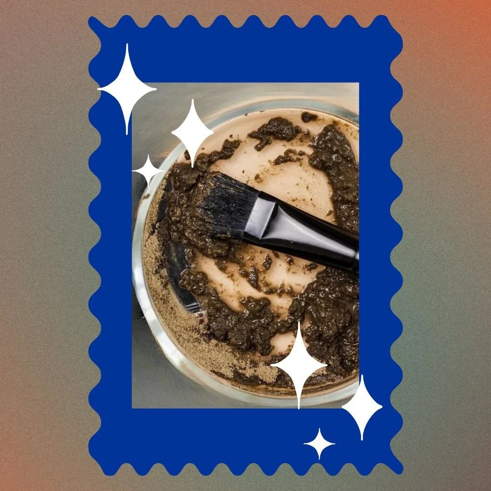

The Green Peel: A Summer Favorite

We love to offer our members and new clients alike the best esthetic treatments on the market! This is why we had to bring the Green Peel and its amazing bio-needling capabilities in the studio. While many other skin care studios and spas price the Green Peel at a premium, we intentionally left it as a Level I Peel option so that everyone can access the benefits. As all Green Peels are chemical-free peels, they are suitable for almost all skin. We don't recommend for those with eczema or dermatitis without a consultation. Read on to learn more about Green Peel benefits at Glowdega.
WHAT IS A GREEN PEEL?
A green peel is a chemical-free facial treatment that uses a combination of natural ingredients—including herbs, enzymes, and vitamins—to exfoliate and rejuvenate the skin. Benefits of a green peel include: deep exfoliation, stimulated cell renewal, improved skin hydration, enhanced product absorption, and a reduction in blemishes.
While a Green Peel contains no acid exfoliants (it's really chemical-free!), the primary ingredient that acts as a "peeling" agent is natural sea spicules. The spicules are derived from marine sponges and are designed to penetrate the outer layer of the skin, creating micro-channels that allow for deeper penetration of skincare products. The spicules are believed to stimulate collagen production and cell renewal, leading to smoother, firmer, and brighter skin. This is why Green Peel treatments are often referred to as "bio-needling" as they often mimic the results of microneedling or microchanneling. However, it is important to note that the results from bio-needling may not last as long as those you may get with microneedling/microchanneling without a more extensive home care routine.
WHY SHOULD I GET A GREEN PEEL?
If you've got texture concerns that can include icepick, rolling, or boxcar scarring; fine lines and wrinkles, collagen and elastin loss, and hyperpigmentation then the Green Peel would be especially beneficial to you!
It is important to note that spicule facial treatments may not be suitable for individuals with certain skin conditions, such as rosacea or eczema. If you are a person who experiences seasonal cold sores and/or have the herpes simplex virus present then this peel should also be avoided as it can trigger an outbreak. We provide each of our clients with custom treatment plans at Glowdega so we can properly prep your skin prior to receiving a Green Peel and give you the desired long-term results with a proper plan for follow-up treatments.
The Green Peel is great year-round. YES, you still need to be mindful of sun exposure and be diligent with your sunscreen use but this doesn’t make your skin more susceptible to burning as traditional chemical peels might.
DOES THE GREEN PEEL BURN?
Unlike traditional chemical peels, the Green Peel doesn't have the typical burning or heat sensation when applied. Instead, it may feel more abrasive, like a physical exfoliation. The sensation of a Green Peel has been described as a cactus being rubbed into your face, so it isn't exactly pleasant. The prickly sensation may last a total of 10 minutes during the treatment and the skin may feel a bit numb or have that pins and needles feeling for a few hours afterwards.
WILL I ACTUALLY PEEL WITH A GREEN PEEL?
Oh, most definitely. Depending on which version of the Green Peel you get, you can experience light shedding to extreme peeling. Both versions will result in smooth, radiant skin with some tightening and firming benefits as well.
HOW CAN I BOOK MY GREEN PEEL?
Green Peel options at Glowdega are available as a Level I peel add-on. If you have more questions you can email book@glowdega.com.